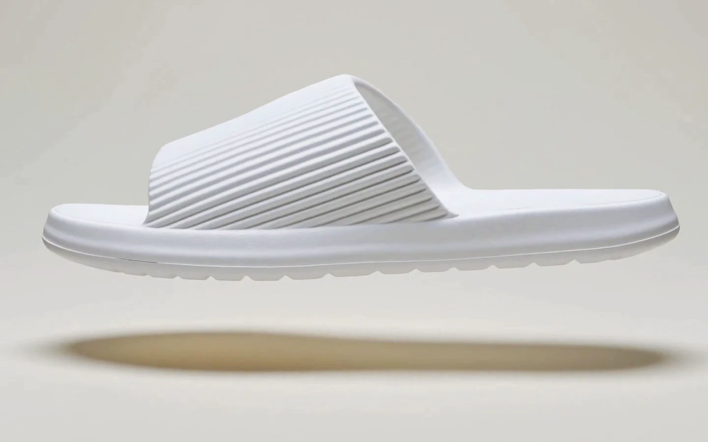

Leave less behind.
Studio Rowan redesigns products and systems that create unnecessary waste.
Lasting hospitality goodsLondon, 2026
The hotel slipper.
Worn for moments, wasted forever.
It was summertime in the Swiss Alps. The moon was shining, and the campfire was crackling. A group of friends sat by a lake, beers in hand, chatting about work. One of them managed a hotel and mentioned, almost in passing, that the hotel got through 70,000 pairs of disposable slippers a year.
70,000 pairs. Used once, often for a matter of minutes, and thrown away. It was one of those numbers that was difficult to forget about.
So, once back in the UK, we reached out to hotels and spas and quickly realised that this was not an isolated issue. Disposable slippers are used in enormous quantities across the hospitality industry.
0
Pairs binned by one hotel, in one year
0
Pairs sent to landfill in America, every year
Figure not yet sourced. Carried for this preview only.We thought there had to be a better way.
So we redesigned them.
The Never-Ending Slipper.
A better hotel slipper, designed for a world with less waste.
The conventional hotel slipper isn’t just wasteful. It’s not particularly good at being a slipper.
They offer little support. Limited sizing. They aren’t particularly comfortable. And despite spending much of their (very short) lives around pools and spas, they aren’t even waterproof.
We saw an opportunity to change that.

Why it holds up.
-
Recycled EVA foamMade from what already exists.
-
WaterproofBuilt for pools and spas, not in spite of them.
-
Supportive, wider fitComfortable for a wider range of guests.
-
Treaded soleDesigned with wet, poolside floors in mind.

Most importantly, they can be washed and used again.
And again.
And again. And again. Every wash keeps another disposable pair out of landfill.
Our mission.
We don’t think the world has a waste problem. We think it has design problems.
- But times have changed.
- The world has changed.
- And it’s important that we change too.
Many of the products and systems we use today were designed decades ago and, at the time, they made sense for the world they existed in.
Our mission is to re-examine outdated products and systems that create unnecessary waste and design better alternatives. Alternatives that aren’t just better for the planet, but better for people, business and budgets too.
Because we don’t want sustainability to be the only improvement we make. We want our products and systems to be better than they were before as well as better for the planet.
Work with us.
Still paying for thousands of disposable slippers every year?
We’d love to help you change that. If your hotel, spa or hospitality group is interested in replacing its current slipper system with something designed for the world we live in now, get in touch, or request a sample pair.
Let’s leave less behind.
- Studio
- Studio Rowan, London, UK
- Product
- The Never-Ending Slipper, recycled EVA
- Contact
- hi@studiorowan.com
- Set in
- Outfit Light and Inter
© 2026 Studio Rowan. Lasting hospitality goods.